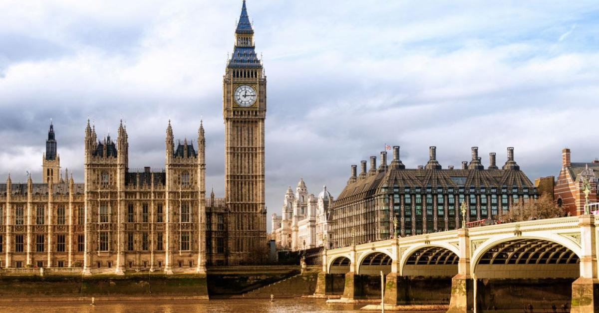
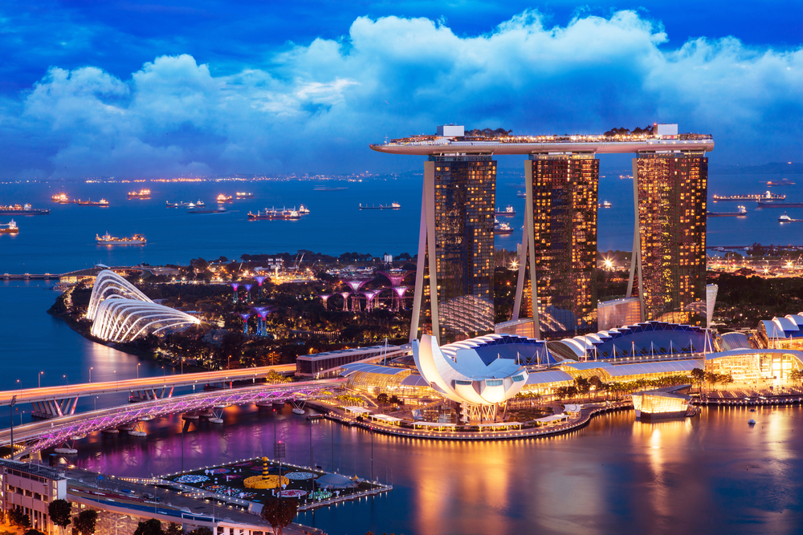
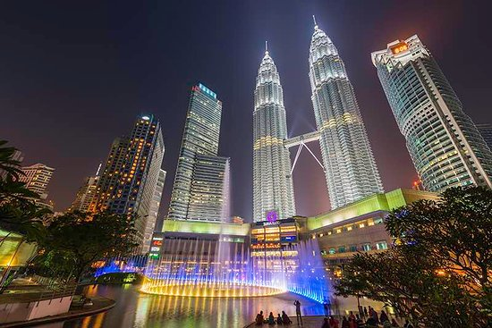

| Name |
Country |
Image |
Description |
| Australia |
Sydney |

|
Сидней, город, из которого выросла Австралия, расположен «у самой красивой гавани мира», как описал это место основатель первых поселений Артур Филлип. |
| United Kingdom |
London |
 |
Лондон столица и крупнейший город Соединённого Королевства Великобритании и Северной Ирландии. Административно образует регион Англии Большой Лондон, разделённый на 33 самоуправляемых территории. Население составляет 8 908 081 чел. |
| Republic of Singapore |
Singapure |
 |
Республика Сингапу́р — город-государство, расположенный на островах в Юго-Восточной Азии, отделённых от южной оконечности Малаккского полуострова узким Джохорским проливом. Граничит с султанатом Джохор, входящим в состав Малайзии, и с провинцией Острова Риау, входящей в состав Индонезии.
|
| Malaysia |
Kuala Lumpur |
 |
Куала-Лумпур раскинулся в юго-западной части Малаккского полуострова, в уютной долине рек Кланг и Гомбак, на площади 243 кв. км. Окаймленный со всех сторон горами, современный Куала-Лумпур сохранил удивительную самобытность, приобрел индустриальный лоск, умело соединил изысканный европейский стиль и волшебную исламскую архитектуру. |
|